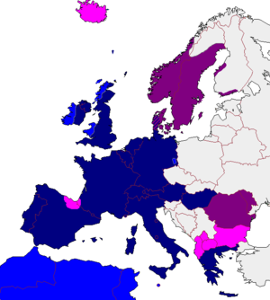

Articles are found in many Indo-European and Semitic languages but are absent from some large languages of the world, such as Indonesian, Japanese, Hindi and Russian.
Linguists believe the common ancestor of the Indo-European languages, Proto-Indo-European, did not have articles. Most of the languages in this family do not have definite or indefinite articles; there is no article in Latin, Sanskrit, nor in some modern Indo-European languages, such as the families of Slavic languages (not including Bulgarian, Macedonian and Torlak, which are rather distinctive among the Slavic languages in terms of grammar) and Baltic languages. Although Classical Greek has a definite article (which has survived into Modern Greek and which bears strong resemblance to the German definite article), the earlier Homeric Greek did not. Articles developed independently in several language families.
Not all languages have both definite and indefinite articles, and some languages have different types of definite and indefinite articles to distinguish finer shades of meaning; for example, French and Italian have a partitive article used for indefinite mass nouns, while Colognian has two distinct sets of definite articles indicating focus and uniqueness, and Macedonian uses definite articles in a demonstrative sense, with a tripartite distinction (proximal, medial, distal) based on distance from the speaker or interlocutor. The words this and that (and their plurals, these and those) can be understood in English as, ultimately, forms of the definite article the (whose declension in Old English included thaes, an ancestral form of this/that and these/those).
In many languages, the form of the article may vary according to the gender, number, or case of its noun. In some languages the article may be the only indication of the case. Many languages do not use articles at all, and may use other ways of indicating old versus new information, such as topic–comment constructions.
Test
An indefinite article indicates that its noun is not a particular one (or ones) identifiable to the listener. It may be something that the speaker is mentioning for the first time, or its precise identity may be irrelevant or hypothetical, or the speaker may be making a general statement about any such thing. English uses a/an, from the Old English forms of the number 'one', as its primary indefinite article. The form an is used before words that begin with a vowel sound (even if spelled with an initial consonant, as in an hour), and a before words that begin with a consonant sound (even if spelled with a vowel, as in a European).
